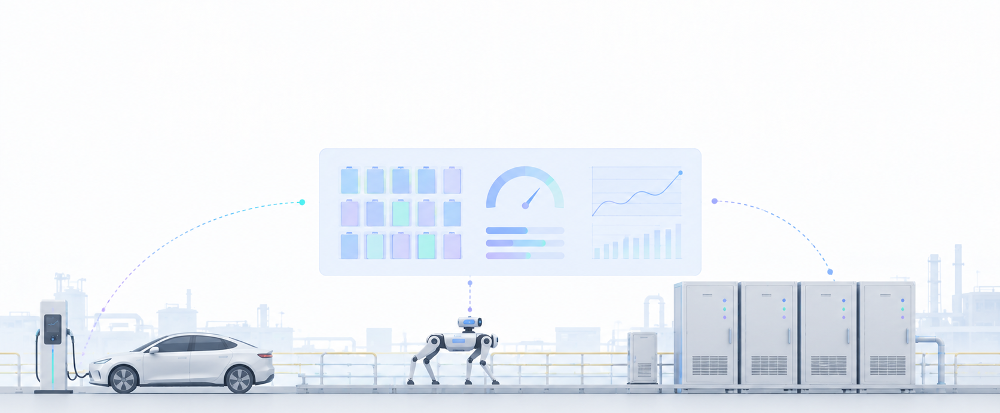
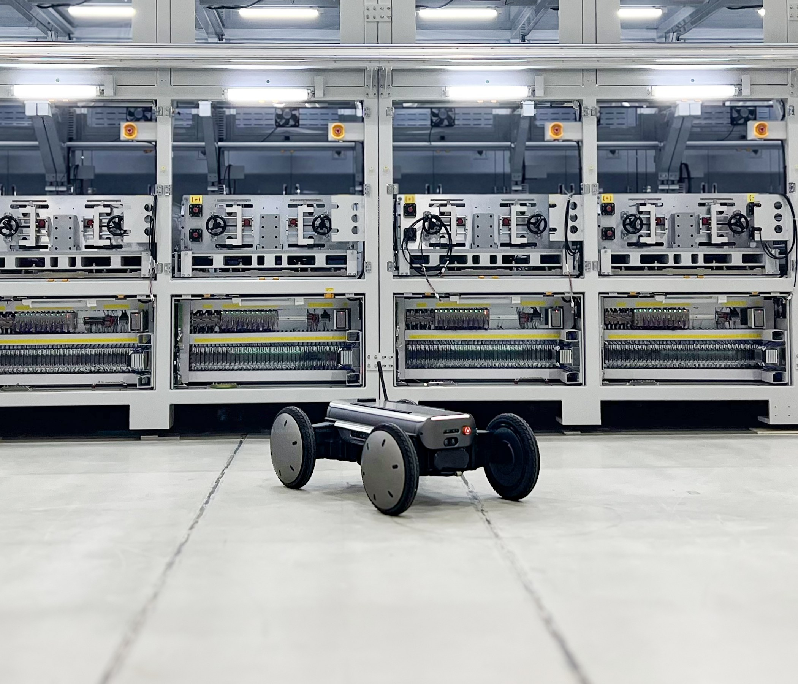
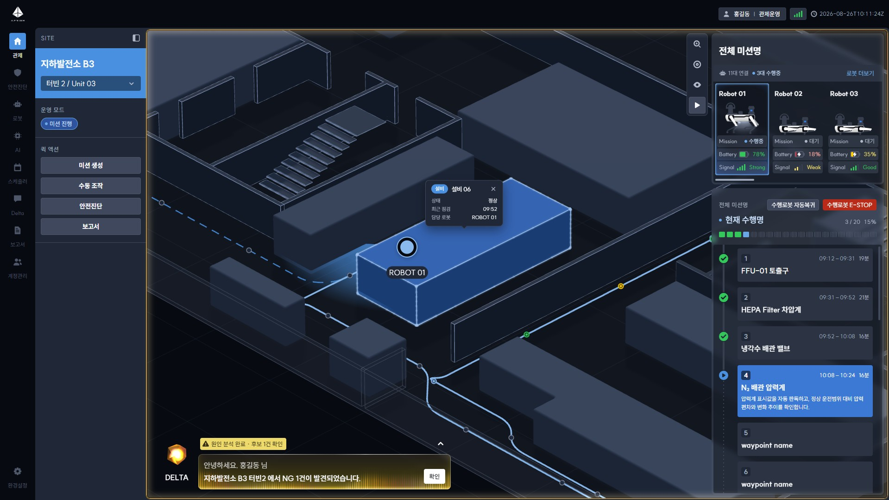
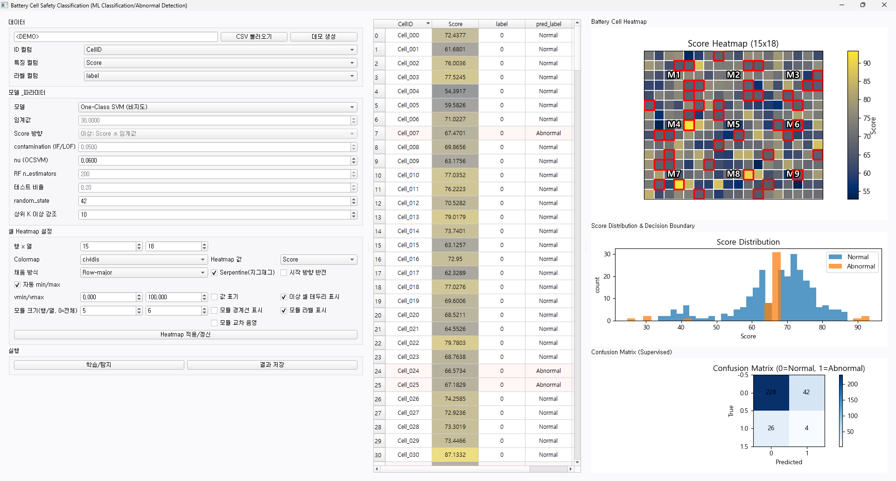
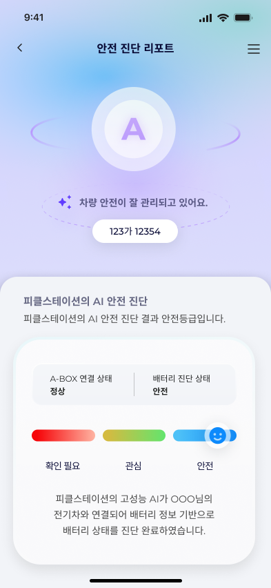
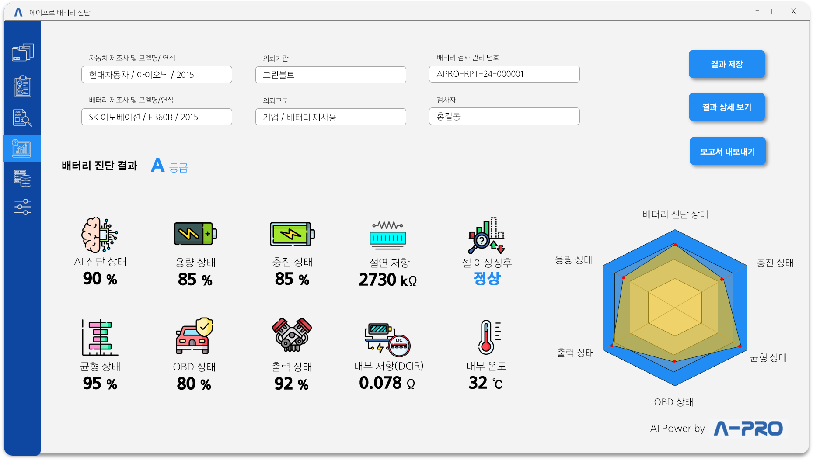
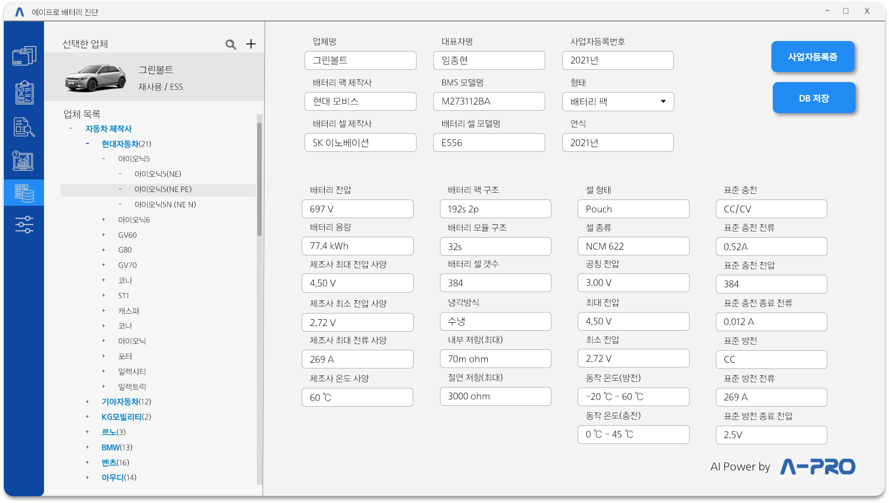
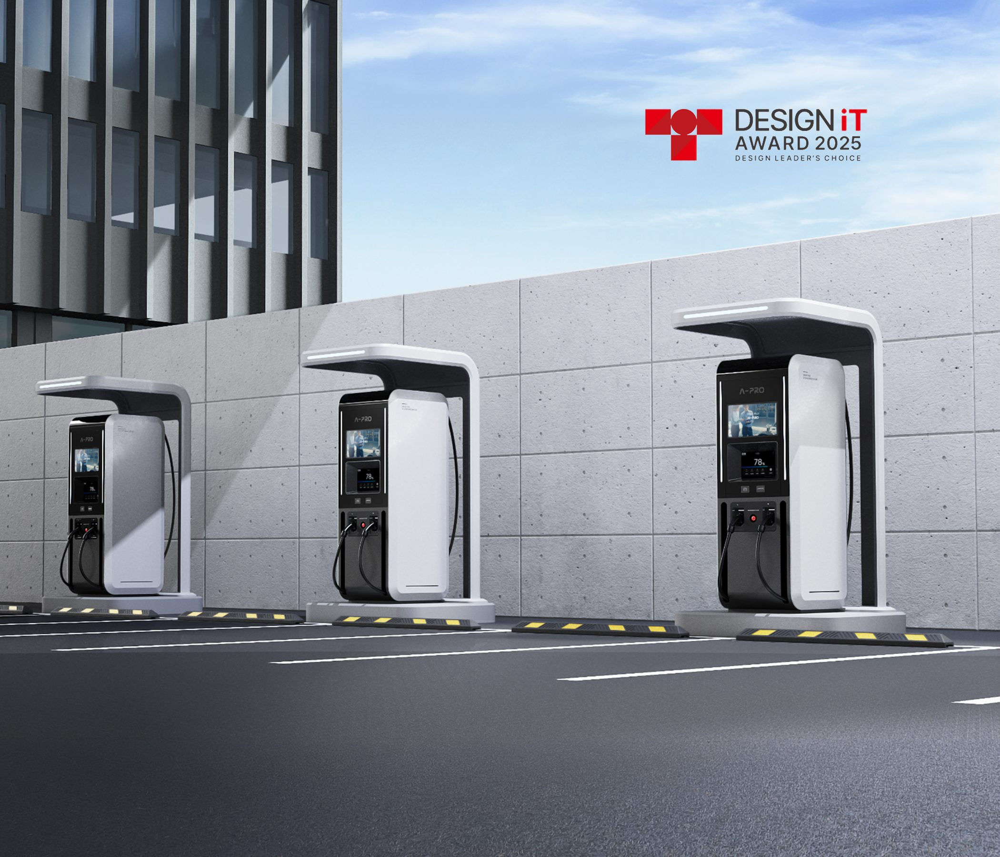
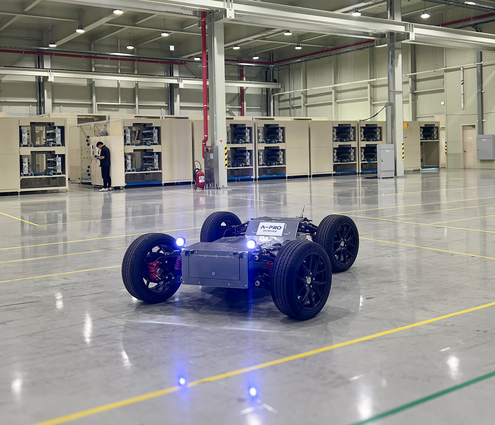

AI로 배터리와 설비의 상태를 읽어냅니다. 진단부터 충전·제어까지, 전기 모빌리티의 데이터를 잇습니다.

로봇 플랫폼
배터리 진단 플랫폼
전기자동차 충전 플랫폼
전기자동차 제어 플랫폼








에이프로의 산업 안전 진단 로봇 솔루션은 이동형 로봇, AI, 원격 관제 기술을 결합하여 위험 산업 현장의 안전 점검을 자율화·지능화합니다.
안전장비 착용 여부, 설비 이상 및 누출, 열화상, 음향 등 6대 핵심 점검 항목을 로봇이 자율적으로 수행하며, 수집된 데이터를 통합 관제 시스템에서 실시간으로 모니터링하고 분석합니다.
이를 통해 작업자의 위험 구역 노출을 최소화하고 점검의 일관성과 신뢰성을 높여, 선제적이고 스마트한 산업 안전 운영을 지원합니다.
APRISM은 제조사와 기종이 서로 다른 로봇을 하나의 플랫폼에서 통합 관제하는 이기종 로봇 통합 관제 플랫폼입니다.
객체 검출, VLM, 시계열 데이터 분석 등 다양한 AI 기술을 기반으로 현장에서 수집되는 영상·센서·설비 데이터를 분석하고, 에이프로의 LLM 기반 지능형 통신 모델 DELTA가 이를 해석·요약하여 로봇, 현장 설비, 관제실을 하나의 정보 체계로 연결합니다.
APRISM은 지하 발전소, 변전소, 산업 플랜트, 데이터센터 등 사람이 상시 접근하기 어렵거나 위험한 산업 현장에서 무인 순찰, 이상 감지, 상태 진단 및 예지보전을 지원합니다.
전기자동차 충전 중 배터리 데이터를 실시간으로 수집하고, 개별 셀 전압과 모듈 온도 정보를 AI 기반으로 분석하여 배터리의 이상 징후와 안전 상태를 진단하는 솔루션입니다.
배터리 이상을 조기에 감지하여 사고 위험을 예방하고, 보다 안전한 충전 환경 구축과 효율적인 배터리 유지관리를 지원합니다.
전기자동차 사용후 배터리의 성능과 잔존가치를 신속하게 평가하는 AI 기반 진단 솔루션입니다.
배터리의 부분 방전 데이터를 기존 학습 데이터와 비교·분석하여, 10분 이내에 배터리 셀의 가용 최대 용량과 건강 상태(SOH)를 예측합니다.
이를 통해 중고 전기차 및 사용후 배터리의 상태를 빠르고 정량적으로 평가하고, 재사용·재제조·재활용 등 배터리 활용 의사결정을 지원합니다.
에이프로의 전기자동차 충전 솔루션 PICKLE Station은 주거용 충전부터 공공 충전소, 상용 플릿까지 다양한 운영 환경에 대응하는 통합 충전 인프라 솔루션입니다.
원격 모니터링과 충전기 운영·유지관리 기능을 지원하며, 충전 운영 플랫폼 및 에너지관리시스템(EMS)과 연계하여 충전 인프라를 효율적으로 관리하고 유연하게 확장할 수 있습니다.
에이프로가 축적해 온 전력전자 및 배터리 시스템 기술을 기반으로, 안전하고 안정적인 충전 환경과 지속 가능한 전기 모빌리티 생태계를 제공합니다.
에이프로는 ECOTRON 차량 및 자율주행 제어기의 국내 총판으로서 VCU, ZCU, EVCC, 자율주행 제어기 등 검증된 차량 제어 솔루션을 공급합니다.
ECOTRON 제어기는 ISO 26262 기능안전과 MATLAB/Simulink 기반의 모델 기반 개발(MBD)을 지원하며, 차량 제어 시스템 개발에 요구되는 높은 안전성과 개발 효율성을 제공합니다.
에이프로는 국내 공급과 기술 지원을 통해 전기자동차, 자율주행차, 무인 이동체 및 로봇 분야 고객의 제어기 도입부터 시스템 적용까지 지원합니다.